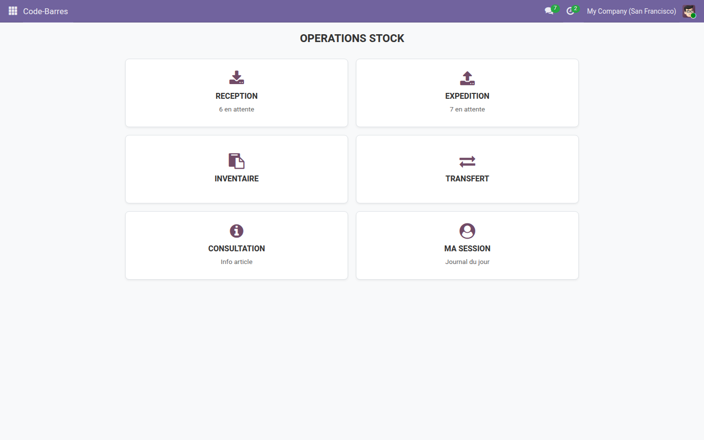
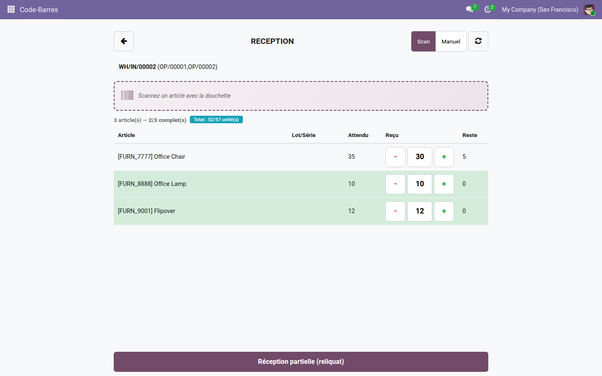
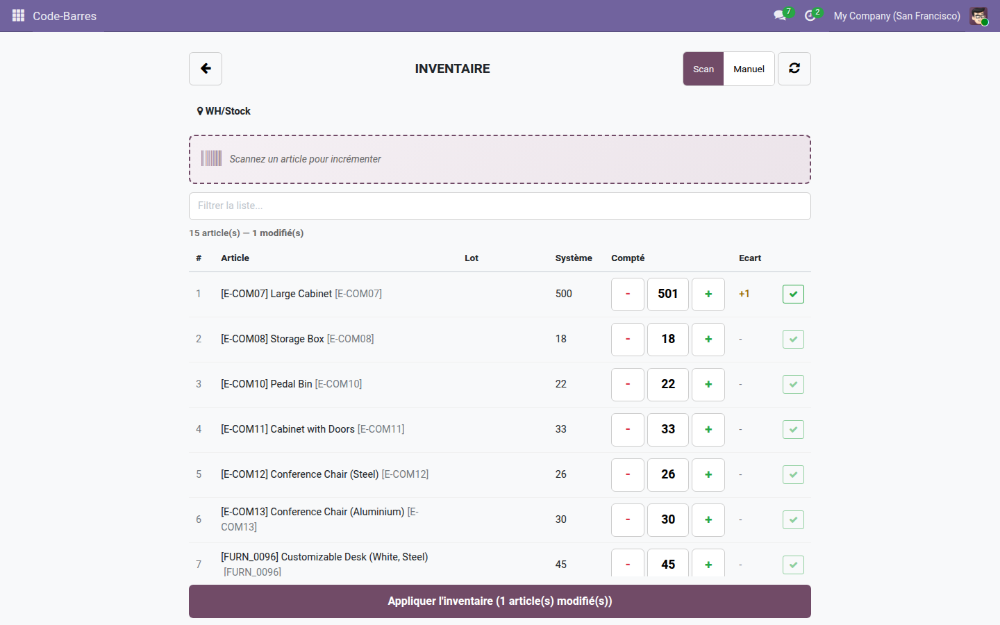

Réceptionnez, expédiez, inventoriez et transférez au scan — cinq écrans tactiles pensés pour le terrain, sur n'importe quelle douchette ou la caméra du téléphone. Aucune licence Enterprise.
Sur le quai, l'opérateur n'a ni souris ni clavier confortable : il a une douchette et les mains prises. Les vues stock natives d'Odoo restent conçues pour le bureau — trop de champs, trop de clics, pas de retour sonore quand un scan passe. Résultat : des erreurs de quantité, des lignes oubliées et un inventaire qui traîne. Il manque une interface plein écran, tactile, qui réagit au bip.
Un menu plein écran, doigts-first : l'opérateur touche l'opération à réaliser et démarre immédiatement, sans naviguer dans les menus Odoo.

On scanne l'article, la ligne s'incrémente et le bip confirme. Le compteur avancé/attendu reste visible en permanence, reliquat calculé tout seul.

Le stepper +/- corrige la quantité comptée d'un doigt ; la validation applique l'ajustement d'inventaire sur l'emplacement scanné.

L'extension Code-barres Stock — Lots & Séries ajoute à ces mêmes écrans la saisie du lot au scan, les dates de péremption, la génération et le collage de numéros de série, le scan-to-pick à l'expédition et les étiquettes PDF Code128 par lot.
Licence LGPL-3 — compatible Odoo 19.0. Support : support@odooskills.com.